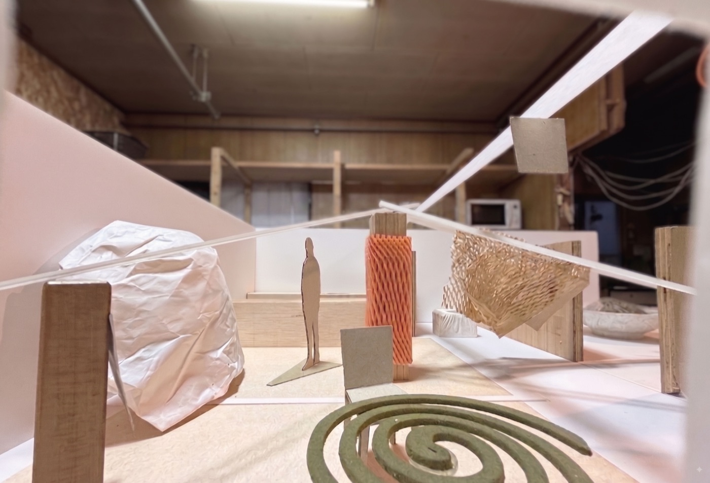

秋田市旭南にあるオープンスタジオです。
旭川沿い、秋田駅と秋田公立美術大学の中間に位置し、新屋方面行き川元小川町バス停の目の前。アートスペース・オルタナスの隣にあります。
一階は約三十畳の共用スタジオとキッチン、八畳の作業スペース。二階には八畳の個室スタジオが二部屋あります。
2026年5月、長らく管理者だったF氏の県外引っ越しに伴い、有志が引き継いで運営を始めました。
現在は、制作（短期・長期）、ワークショップ、展示、飲食含むイベントに対応しています。
週末に当スタジオ主催のリサーチプログラムを開催しています。
観察する、分解する、再構成する、冒険する。
詳細・お申し込みはInstagramをご覧ください。
現在、声をかけていただいた方や紹介ベースを中心に運営しています。
ご興味のある方は、まずメールかInstagramでご連絡ください。利用の形や条件はご相談のうえで決めます。
空間
一階：約三十畳の共用スタジオ、キッチン、八畳の作業スペース
二階：八畳の個室スタジオが二部屋
設備
作業台、インパクトドライバー、各種工具、キッチン、冷蔵庫、洗濯機、駐車場
利用時間
原則平日9:00-21:00
管理人制度
現在、管理人を募集しています。興味のある方はお声がけください。
〒010-0925
秋田県秋田市旭南三丁目十番十四号
新屋方面行き 川元小川町バス停の目の前。
アートスペース・オルタナスの隣。
奥には旭南ハイツ（ゲストルームあり）。
駐車場数台あり。
メール tsuda@3from2.com
Instagram @asahi_studio_exploring